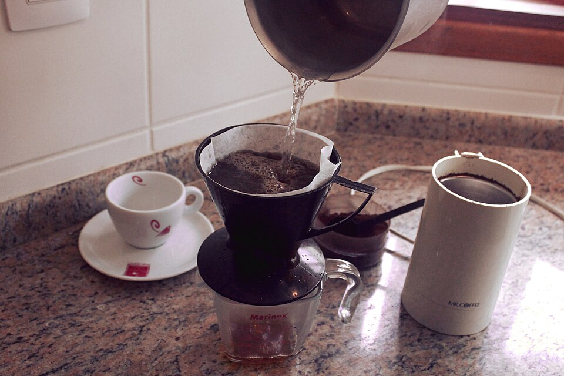
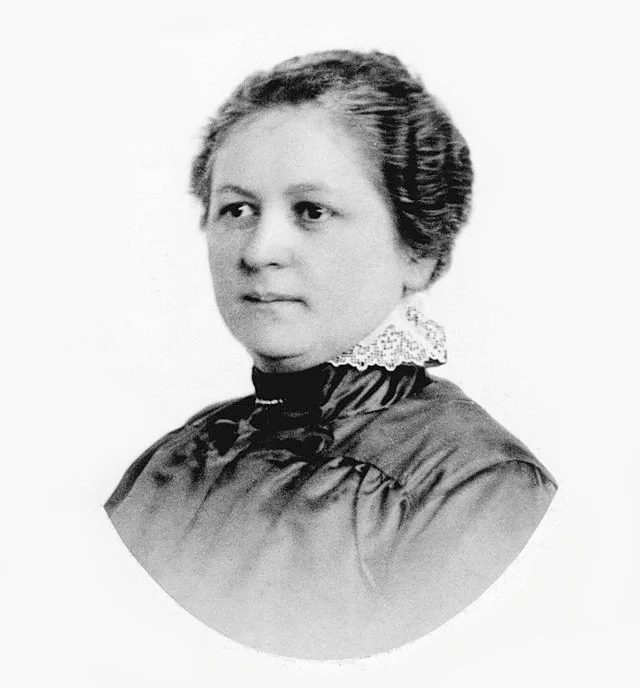

01
07:00 · O CAFÉ DA MANHÃ
Filtro de café de papel

INVENTORA / PESQUISADORA
Melitta Bentz
Uma solução simples tornou o preparo do café mais prático e reduziu os resíduos na bebida.
Uma invenção que continua presente nas nossas manhãs.